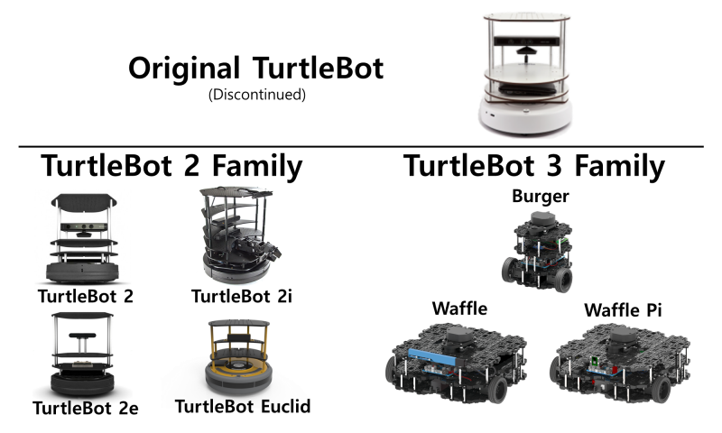
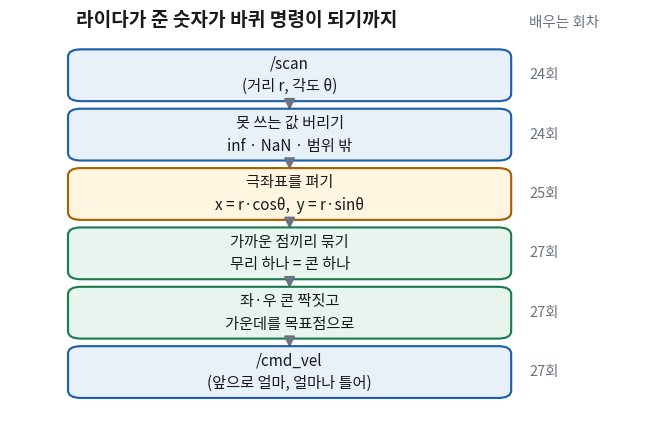
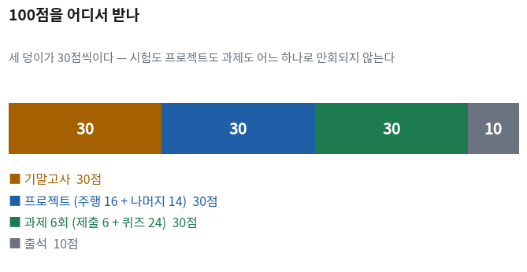
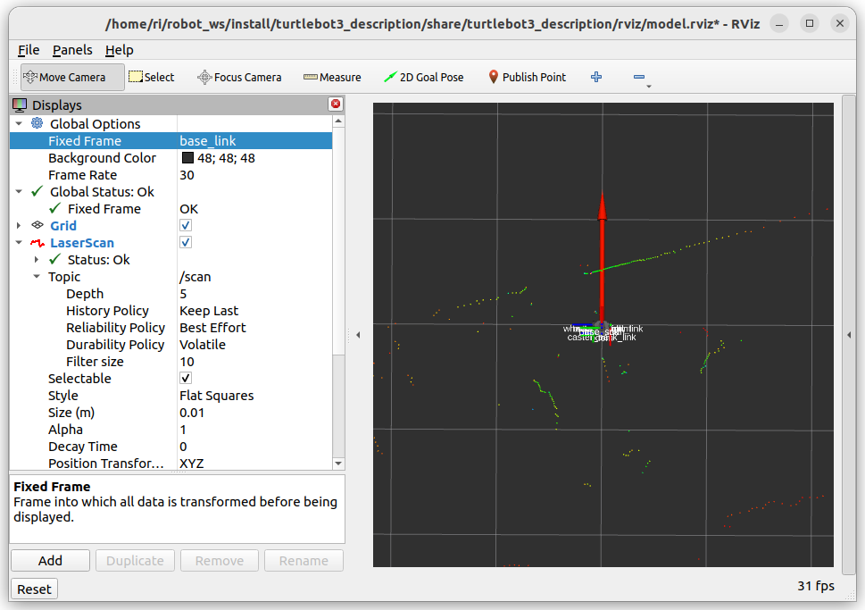

이 강의가 요구하는 것
- 30회 동안 무엇을 어떤 순서로 배우고, 학기 끝에 무엇을 해야 하나?
- 무엇으로 점수를 받나?
- 과제는 어떻게 내고 어떻게 채점되나?
- 이 과목에서 AI를 써도 되나? 어디까지 되나?
- AI가 코드를 다 짜 주는 시대에 이 과목이 왜 남아 있나?
이 강의의 마지막 날, 여러분은 바닥에 세워 둔 고깔(콘) 사이를 로봇이 스스로 지나가게 만들어야 한다. 사람이 조종하지 않는다. 로봇이 라이다로 콘을 보고, 길 가운데를 스스로 찾아 바퀴를 돌린다. 그 로봇이 콘을 쓰러뜨리면 그 시도는 그 자리에서 끝난다.
코드는 AI가 짜 줄 수 있다. 실제로 짜 준다. 그것을 막을 방법도 없고, 막을 생각도 없다. 그런데 로봇은 코드를 보고 움직이는 것이 아니라 바닥 위에서 움직인다. 바퀴가 미끄러지고, 배터리가 닳고, 검은색 콘은 라이다에 안 잡힌다. 이 강의의 절반은 그 자리에서 무엇을 봐야 하는지를 다룬다.
오늘은 실습이 없다. 대신 이 과목이 어떻게 굴러가는지를 순서대로 못 박는다 — 무엇을 배우나, 학기 끝에 무엇을 해야 하나, 점수는 어디서 나오나, 과제는 어떻게 채점되나. 그 넷을 다 정한 다음에 이 과목의 AI 사용 규칙을 낸다. 규칙이 왜 그런 모양인지는 앞의 넷을 알아야 이해되기 때문이다.
한 장 요약 — 학기가 끝나도 이 표만 남으면 된다
무엇을 먼저 볼지: 가운데 열만 세로로 읽는다. 그게 이 과목의 규칙 전부다.
| 이 과목의 약속 | 구체적으로는 | 어디서 확인되나 |
|---|---|---|
| 학기 끝에 로봇이 콘 사이를 지나가야 한다 | 사람이 조종하지 않는다. 라이다로 보고 스스로 판단한다 | 학기 말 주행 평가 |
| 세 덩이가 30점씩이다 | 기말고사 30 · 프로젝트 30 · 과제 30 · 출석 10. 어느 하나로 나머지를 만회하지 못한다 | ④절 |
| 과제는 제출물을 채점하지 않는다 | 제출은 1점. 나머지 4점은 다음 수업 시작 3분 퀴즈가 준다 | 과제 여섯 번마다 |
| AI를 써도 된다. 설명하지 못하는 것을 내면 안 된다 | 얼마나 썼는지는 묻지 않는다. 낸 것을 내 말로 다시 설명할 수 있는지를 본다 | 3분 퀴즈, 기말고사, 보고서의 AI 활용 기록 |
| 설치·설정은 에이전트에게 맡긴다 | 다만 됐는지 확인하는 것은 넘기지 않는다 | 2·3회에서 환경을 만들고, 그다음부터 설치 이야기를 하지 않는다 |
| 확인할 수 없는 것은 배운 것이 아니다 | 모든 회차에 눈으로 볼 수 있는 성공 기준이 있다 | 회차마다 ✅ 점검 목록 |
① 30회는 네 부로 나뉜다 🟢 맡긴다
주 2회, 회당 1시간 10분, 15주. 총 30회다. 순서에는 이유가 있다.
무엇을 먼저 볼지: 맨 오른쪽 「왜 이 순서인가」 열. 왼쪽 두 열은 나중에 찾아볼 때 쓴다.
| 부 | 회차 | 무엇을 하나 | 왜 이 순서인가 |
|---|---|---|---|
| 1부 환경과 도구 | 1~5 | 리눅스·WSL 설치, 에이전트 붙이기, 리눅스 명령어, Git | 6회부터는 설치 이야기를 하지 않기 위해서다. 도구가 없으면 그 뒤 25회가 전부 막힌다 |
| 2부 C++ | 6~14 | 코드를 읽는 최소 장비, 클래스, 빌드, 복사와 이동, 표준 라이브러리 | 짜기 위해서가 아니라 판단하기 위해서다. AI가 준 코드가 맞는지 보려면 읽을 줄 알아야 한다 |
| 3부 ROS 2 | 15~22 | 프로그램을 쪼개는 방식, 설치, 확인 명령어, 통신 프로그래밍, 밀림과 시각화 | 로봇 프로그램은 여러 조각이 동시에 도는 형태다. 그 구조를 먼저 익힌다 |
| 4부 로봇과 프로젝트 | 23~30 | 라이다, 좌표 변환, 콘 인식과 주행, 실물 로봇, 프로젝트 | 여기가 이 과목의 목적지다. 앞의 22회는 전부 이 여덟 회차를 위한 준비다 |
혼자 해야 하는 구간은 초반 두 번뿐이다
이 강의는 설치와 설정을 에이전트에게 넘긴다. 그러려면 에이전트가 먼저 있어야 한다. 그 처음 두 걸음만 사람이 직접 한다.
[2회] WSL 설치 ⛔ 사람이 직접 — 붙일 리눅스가 아직 없다
↓
[3회] 에이전트 설치 ⛔ 사람이 직접 — 아직 시킬 대상이 없다
↓
[4회~] 그다음부터 🟢 설치·설정은 시킨다 / 🔴 확인은 내가 한다② 학기 끝에 하는 일은 이것 하나다 🔴 사람이 한다
바닥에 콘을 두 줄로 세운다. 로봇은 그 사이를 혼자서 지나가야 한다. 사람이 조종하지 않고, 미리 외운 길을 따라가지도 않는다. 라이다로 콘을 보면서 그 자리에서 판단한다.
▲ 로봇 진행 방향
● ● ● ● ← 왼쪽 콘
: : : :
: [로봇] ....... 목표점 : 트랙 폭 70cm
: : : :
● ● ● ● ← 오른쪽 콘
|← 60~80cm →|숫자를 넣어 본다 — 콘 하나가 라이다에 점 몇 개로 보이나
「콘이 보인다」는 말이 프로그램에서는 「점 몇 개가 모여 있다」는 뜻이다. 몇 개인지 세어 보자. 우리 라이다는 1도마다 한 번씩 재고, 한 바퀴에 값 360개를 준다.
지름 20cm 콘이 1m 앞에 있을 때
콘이 차지하는 각도 ≈ 11.4도 → 1도마다 한 점이므로 점 11개
같은 콘이 3m 앞에 있을 때
콘이 차지하는 각도 ≈ 3.8도 → 점 4개벽 미로가 아니라 콘인 이유
작년까지 이 프로젝트는 벽 사이를 지나가는 미로였다. 올해 콘으로 바꿨다. 이유가 있다.
| 벽 미로 | 콘 트랙 (올해) | |
|---|---|---|
| 라이다에 어떻게 보이나 | 끊김 없는 점 덩어리 | 드문드문 끊어진 점 무리 |
| 필요한 계산 | 왼쪽·오른쪽 거리 하나씩만 봐도 된다 | 점을 무리로 묶고 위치를 계산해야 한다 |
| 좌표 변환 | 안 배워도 통과할 수 있었다 | 안 하면 못 푼다 |

③ 라이다 숫자가 바퀴 명령이 되기까지 🔴 사람이 한다
프로젝트를 한 덩어리로 보면 손댈 곳이 없다. 일곱 단계로 쪼개면 각 단계가 한 회차의 수업 내용이 된다.

/scan (거리 r, 각도 θ 로 들어온다)
↓ ① 못 쓰는 값 버리기 — inf · NaN · 범위 밖 [24회]
↓ ② 극좌표를 직교좌표로 펴기 x = r·cosθ, y = r·sinθ [25회]
↓ ③ 로봇 기준 좌표로 옮기기 (라이다는 로봇 중심에 없다) [26회]
↓ ④ 가까운 점끼리 무리 짓기 → 무리 하나 = 콘 하나 [27회]
↓ ⑤ 무리의 중심 = 콘의 위치 [27회]
↓ ⑥ 좌·우 콘을 짝지어 가운데를 목표점으로 [27회]
↓ ⑦ 목표점 방향으로 조향 + 안전 제한 [27회]
/cmd_vel (직진 속도, 회전 속도로 나간다)
①에 나오는 inf와 NaN은 라이다가 값을 제대로 못 잰 방향에 채워 보내는
특별한 값이다. 지금은 그런 게 섞여 들어온다는 것만 알아 두면 된다 —
무엇이고 왜 위험한지는 ⑥절에서 숫자로 보여 준다.
🆕 이 흐름도에서 처음 나오는 이름
- ros2
- 로봇 프로그램들을 서로 이야기하게 붙여 주는 소프트웨어의 이름이자, 터미널에서 치는 명령어의 이름이다. 이 강의의 3부 전체가 이것을 다룬다.
- /scan
- 라이다가 잰 값이 흘러 나오는 통로의 이름이다.
이름 앞의 빗금(
/)이 통로 이름이라는 표시다. 위 흐름도의 입구가 여기다. - /cmd_vel
- 바퀴에게 「얼마나 빨리, 얼마나 틀어라」를 보내는 통로다. cmd는 명령(command), vel은 속도(velocity)를 줄인 것이다. 위 흐름도의 출구가 여기다.
- LaserScan
/scan으로 흐르는 데이터 한 덩어리의 형식 이름이다. 거리 값 묶음뿐 아니라 첫 값이 어느 각도인지, 한 칸이 몇 도인지도 같이 들어 있다. 그래서 「몇 번째 값」을 「몇 도 방향」으로 바꿀 수 있다.
제대로 다루는 곳: 15~17회(ROS 2의 구조) · 24회(LaserScan 뜯어보기)
이 파이프라인의 각 단계는 몇 회차에서 배우나
무엇을 먼저 볼지: 「배우는 회차」 열. 오늘 이 표를 이해할 필요는 없다. 학기 중에 다시 본다.
| 단계 | 무엇을 하나 | 배우는 회차 | 없으면 무슨 일이 나나 |
|---|---|---|---|
| ① | 못 쓰는 값 버리기 | 24회 | 측정 실패한 방향을 콘으로 착각한다 |
| ② | 극좌표를 직교좌표로 펴기 | 25회 | 「몇 도 방향에 몇 미터」로는 두 점 사이 거리를 못 잰다 |
| ③ | 로봇 기준 좌표로 옮기기 | 26회 | 라이다 위치만큼 콘 위치가 어긋난 채로 주행한다 |
| ④⑤ | 점 묶고 중심 구하기 | 27회 | 점 하나하나를 콘으로 세어 콘이 수십 개로 보인다 |
| ⑥⑦ | 목표점 잡고 조향 | 27회 | 콘 위치는 아는데 어디로 갈지를 정하지 못한다 |
| — | 이 전부를 돌아가는 프로그램으로 만들기 | 19~22회 | 계산은 맞는데 로봇이 못 받는다 |
| — | 그 프로그램을 C++로 읽고 고치기 | 6~14회 | AI가 준 코드가 맞는지 판단할 수 없다 |
④ 30점짜리 덩이가 셋이다 🔴 사람이 한다

| 무엇 | 점수 | 어떻게 받나 | 언제 |
|---|---|---|---|
| 기말고사 | 30 | 학기 중에 푼 3분 퀴즈 30문항이 출제 자원이다 | 학기 말 |
| 프로젝트 | 30 | 콘 트랙 주행 + 코드 정리 + 보고서 | 학기 말 |
| 과제 6회 | 30 | 회당 5점. 제출 1점 + 3분 퀴즈 4점 (⑤절) | 학기 중 여섯 번 |
| 출석 | 10 | 수업에 나오고, 실습을 자기 노트북에서 돌린다 | 매 회차 |
프로젝트 30점의 내역
무엇을 먼저 볼지: B항목 16점이 절반을 넘는다는 것 하나만 보면 된다.
| 항목 | 점수 | 무엇을 보나 |
|---|---|---|
| A. 사전 평가 | 6 | 로봇을 켜서 화면에 라이다 점이 찍히면 4점, 주행 프로그램까지 실행되면 6점 |
| B. 주행 평가 | 16 | 출발 4점 / 정방향 6점(3구간 × 2점) / 역방향 6점(3구간 × 2점) |
| C. 저장소 활용 | 3 | 변경을 나눠 올린 기록 2회 이상, PR 설명 5줄 이상 |
| D. 소스 코드 정리 | 2 | 함수 하나가 20줄 이하, 선언과 구현을 파일로 나눔 |
| E. 보고서 | 3 | 양식 + AI 활용 기록 + 튜닝 기록 |
🆕 평가표에 나온 이름 둘
- PR (Pull Request, 「이 변경을 합쳐 주세요」 요청)
- 내가 고친 것을 합치기 전에 남에게 보여 주는 자리다. 위 C항목 3점이 보는 것은 코드가 아니라 그 자리에 쓴 설명 5줄이다. 무엇을 왜 이렇게 했는지는 코드가 말해 주지 않기 때문이다.
- 튜닝 (tuning)
- 프로그램 안의 숫자를 실제 로봇을 보면서 조금씩 바꿔 맞추는 일이다. E항목의 「튜닝 기록」은 어떤 값을 왜 얼마로 바꿨는지를 적는 칸이다. 이 칸은 로봇 앞에 실제로 서 있던 사람만 채울 수 있다.
제대로 다루는 곳: 5회(저장소·브랜치·PR) · 27회(주행 값 튜닝) · 30회(협업과 보고서)
⑤ 과제는 제출물을 채점하지 않는다 🟡 맡기되 검사
과제 30점이 여섯 개로 나뉜다. 회당 5점이다. 그런데 채점 방식이 보통과 다르므로 먼저 그것부터 못 박는다.
제출물은 채점하지 않는다. 제출했는지만 본다(1점).
나머지 4점은 과제 마감 다음 수업 시작 3분 퀴즈가 준다.
왜 이렇게 하나 — 제출물로는 알 수 없기 때문이다
과제를 AI에게 시켜도 된다(⑦절). 그러면 제출물만 봐서는 여러분이 무엇을 배웠는지 알 방법이 없다. 잘 쓴 보고서가 여러분이 쓴 것인지 AI가 쓴 것인지 구분되지 않는다. 그래서 채점하는 자리를 옮겼다.
| 생각할 수 있는 방법 | 왜 안 되나 / 왜 골랐나 |
|---|---|
| 제출물을 꼼꼼히 채점한다 | AI 출력과 사람 출력이 구분되지 않는다. 시간만 들고 아무것도 확인되지 않는다 |
| 학기 말에 한 명씩 구두로 묻는다 | 서른 명이면 한 시간이다. 그리고 확인이 학기 끝에 몰려서 여러분이 학기 중에 자기 상태를 모른다 |
| 과제 직후 3분 퀴즈 (이 과목의 선택) | 과제 결과를 자기 눈으로 본 사람만 답할 수 있게 낸다. 그 자리에서 정답을 공개하므로 그날 자기 상태를 안다 |
3분 퀴즈는 이렇게 생겼다
미리 공개한다. 무엇이 나올지 알고 준비하는 것이 이 퀴즈의 목적이기 때문이다. 다섯 문항의 자리가 정해져 있고, 여섯 번 내내 같다.
| 번호 | 무엇을 묻나 | 무엇이 확인되나 |
|---|---|---|
| Q1·Q2 | 과제를 돌렸으면 화면에서 반드시 봤을 값이나 메시지 | 실제로 돌리고 결과를 봤나 |
| Q3 | 「이런 증상이면 원인이 무엇인가」 | 원인을 좁힐 수 있나 |
| Q4 | AI가 흔히 주는 답이 오답 보기에 들어 있다 | 받은 것을 검사했나 |
| Q5 | 「왜 그 값을, 그 방법을 골랐나」 | 설명할 수 있나 |
퀴즈 문항의 모양 — 예시 세 개
실제 문항은 여러분이 그 과제를 한 뒤에야 답할 수 있다. 모양만 미리 본다.
[Q1 유형] 실행 권한을 주지 않은 스크립트를 ./hello.sh 로 실행했을 때 나온 줄은?
1) Permission denied 2) command not found
3) No such file 4) 아무것도 안 나온다
[Q3 유형] 새 터미널에서는 값이 나오는데 열어 둔 터미널에서는 계속 빈 줄이다. 왜인가?
1) .bashrc 는 터미널이 시작할 때 한 번만 읽히기 때문
2) export 가 새 터미널 전용 명령이기 때문 ...
[Q5 유형] 「환경변수가 실제로 걸렸다」를 확인한 것은?
1) 에이전트가 "완료했습니다"라고 답했다
2) 파일을 열어 export 줄이 있는 것을 봤다
3) 새 터미널에서 echo 를 쳐서 값이 찍히는 것을 봤다 ...과제 여섯 개 — 하나가 판단 하나를 맡는다
무엇을 먼저 볼지: 「무엇을 훈련하나」 열. 오늘 나머지 열을 이해할 필요는 없다.
| 과제 | 배부 | 퀴즈 | 무엇을 훈련하나 | 무엇을 하나 |
|---|---|---|---|---|
| HW1 | 4회 | 6회 | 확인 | 에이전트에게 환경 작업을 시키고 내가 무엇을 어떻게 확인했는지 적기 |
| HW2 | 9회 | 11회 | 좁히기 | 고장 세 개가 심긴 빌드 설정을 고치고 어느 단계 오류였는지 적기 |
| HW3 | 13회 | 15회 | 고르기·요구하기 | 코드 두 벌을 돌려 답이 다른 것을 확인하고, 프롬프트를 고쳐 더 나은 것 받아내기 |
| HW4 | 18회 | 20회 | 진단 | 데이터가 안 흐르는 시스템 세 벌 — 어떤 명령을 어떤 순서로 썼나 |
| HW5 | 21회 | 23회 | 검사 | 거북이 주행 노드를 AI에게 받아 검사 목록 여덟 줄로 훑어 고치기 |
| HW6 | 25회 | 27회 | 뽑아내기 | 라이다 한 프레임에서 콘 위치를 좌표로 뽑고 그림으로 확인 |
날짜 규칙 — 이것만 지키면 된다
| 무엇 | 언제 |
|---|---|
| 배부 | 위 표의 회차 수업 끝에. 필요한 파일을 같이 준다 |
| 마감 | 퀴즈 보는 날 전날 밤 23:59. 늦으면 제출 1점을 잃는다 |
| 퀴즈 | 표의 회차 수업 시작 직후 3분. 재응시는 없다 |
| 정답 공개 | 3분이 끝나면 그 자리에서 바로 |
⑥ 이 과목의 내용은 「AI가 못 하는 일」 쪽에 있다 🔴 사람이 한다
AI가 코드를 짜 준다면 프로그래밍 과목이 왜 남아 있나. 이 질문에 먼저 답한다. 답은 로봇이 코드만으로 움직이지 않기 때문이다.
무엇을 먼저 볼지: 오른쪽 열만 세로로 읽는다. 그것이 이 과목의 목차에 가깝다.
| AI가 잘 하는 것 🟢 | AI가 못 하는 것 🔴 |
|---|---|
| 로봇 프로그램의 뼈대 작성 | 로봇이 왜 자꾸 오른쪽으로 치우치는지 판단 |
| 빌드 설정 파일 작성 | 라이다 잡음과 진짜 콘을 구분 |
| 문법 오류 수정 | 배터리가 닳으면 주행이 달라지는 현상에 대응 |
| 표준 라이브러리 사용법 알려주기 | 실시간 제약 아래에서 값을 튜닝 |
| 설치·설정 명령어 나열 | 설치가 정말 됐는지 확인 |
라이다가 주는 것은 「장면」이 아니라 숫자 줄이다
왜 오른쪽 열이 어려운지 한 번에 보여 주는 것이 라이다 데이터다. 라이다는 한 바퀴를 돌면서 방향마다 거리를 하나씩 재서 숫자를 줄로 세워 준다. 사람이 보는 「콘 두 개」가 아니라 이런 모양이다.
거리 값 (m) — 앞에서부터 차례로
0.83 1.24 2.05 0.42 3.30 0.55 ...여기서 「어느 것이 콘이고 어느 것이 벽인가」는 숫자만 봐서는 안 나온다. 게다가 실제 라이다는 잰 값만 주는 것이 아니다. 재기에 실패한 방향도 같이 준다.
NaN < 5.0 : 거짓
NaN > 5.0 : 거짓
NaN == NaN: 거짓잰 곳: 컨테이너(우분투 24.04.4 LTS, g++ 13.3.0 -O2)
🆕 여기서 처음 나오는 것
- inf
- 「무한대」라는 뜻의 특별한 값이다. 라이다가 너무 멀어서 아무것도 못 봤을 때 이 값을 채워 보낸다.
- NaN
- 「숫자가 아님(Not a Number)」이라는 뜻의 특별한 값이다. 라이다가 측정 자체에 실패한 방향에 이 값을 채운다. 위 출력이 보여 주듯 어떤 비교를 해도 거짓이 나온다 — 자기 자신과 비교해도 거짓이다. 그래서 걸러내지 않고 계산에 넣으면 결과가 조용히 틀어진다.
제대로 다루는 곳: 23회(라이다는 무엇을 재는가) · 24회(LaserScan 데이터 다루기)

숫자로 확인한다 — 무엇이 잘못됐는지 아는 사람이 더 나은 코드를 받는다
실제 회사의 C++ 코드 1,046만 줄을 1년간 추적한 연구가 있다. 그 연구의 마지막 실험이 이 과목의 존재 이유를 그대로 보여 준다. 같은 함수 50개를 요구하는 방식만 바꿔서 다시 짜게 했다.
| 어떻게 요청했나 | 효율 점수 | 정적 분석 경고 |
|---|---|---|
| 1단계 — 그냥 짜 달라고 함 | 0.294 | 1.26개 |
| 2단계 — "효율적으로 짜 줘" 정도의 막연한 요구 | 0.342 | 1.22개 |
| 3단계 — 무엇이 문제인지 짚어서 요구 | 0.385 | 1.12개 |
⑦ 그래서 규칙은 한 문장이다 🔴 사람이 한다
앞의 여섯 절이 이 한 문장을 위한 준비였다. 학기 내내 이 문장 하나로 판단한다.
금지되는 것은 AI를 쓰는 것이 아니라, 자기가 설명하지 못하는 코드를 제출하는 것이다.
왜 「금지」도 「무제한」도 아닌가
생각할 수 있는 규칙은 셋뿐이다. 앞의 둘을 먼저 기각한다.
| 가능한 규칙 | 왜 안 되나 |
|---|---|
| AI 금지 | 집행이 안 된다. 확인할 방법이 없는 규칙은 규칙이 아니라 정직한 학생에게만 걸리는 벌칙이다. 그리고 현장에서 안 쓰는 곳이 없다 |
| 무제한 허용 | 이해 없이도 통과된다. 통과한 학생이 다음 학기에 아무것도 못 한다 |
| 설명 책임 (이 과목의 선택) | 도구는 자유롭게 쓰되 결과에 대한 책임은 사람이 진다. 쓴 만큼 이해했는지만 본다 |
「설명할 수 있다」를 어디서 확인하나 — 세 자리다
막연한 기준처럼 들리므로 확인하는 자리를 미리 다 공개한다. 이 셋 말고는 없다. 수업 중에 불시에 지목해서 묻지 않는다.
| 어디서 | 몇 점 | 무엇을 묻나 |
|---|---|---|
| 3분 퀴즈 (여섯 번) | 24 | 여러분이 낸 과제의 결과. 자기 눈으로 본 사람만 답할 수 있게 낸다 (⑤절) |
| 기말고사 | 30 | 학기 중 퀴즈 30문항이 출제 자원이다 |
| 보고서의 AI 활용 기록 | 프로젝트 E항목 안 | AI에게 시킨 것과, 받은 것 중 고친 것 |
보고서에는 제출물이 하나 늘어난다
학기 말 보고서에는 「AI에게 시킨 것과, 받은 것 중 고친 것」 항목이 들어간다. 받은 코드를 그대로 썼다고 적어도 감점이 아니다. 받은 것 중 틀린 것을 찾아냈다고 적으면 가점이다.
[AI 활용 기록 — 보고서에 들어갈 형식]
1) 시킨 말 : "라이다 값에서 가장 가까운 콘을 찾아 줘"
2) 받은 것 : 최솟값을 찾는 코드
3) 내가 확인한 것 : 값에 inf 가 섞여 있었다. 그대로 쓰면 엉뚱한 방향이 나온다
4) 고친 것 : 유효한 값만 걸러낸 뒤에 최솟값을 찾도록 다시 요구했다3번 줄이 이 과목이 보는 자리다. 1번과 2번만 채워진 보고서는 점수가 낮다. 그리고 3번 줄을 채워 본 학생은 3분 퀴즈의 Q4를 틀리지 않는다.
알게 되는 것: 내 노트북이 다음 시간의 설치를 감당할 수 있는지. 못 하면 다음 시간에 아무것도 못 한다.
준비물: 윈도우 노트북, 인터넷. 총 40분쯤 걸린다.
절차
- 윈도우 버전을 확인한다. (3분)
키보드에서 윈도우 키 + R을 누르고 아래를 친다.
창에 뜬 번호가 윈도우 10이면 빌드 19045 이상, 윈도우 11이면 무엇이든 괜찮다. 윈도우 10인데 번호가 그보다 낮으면 먼저 윈도우 업데이트를 돌린다. 이게 30분 넘게 걸릴 수 있다.winver - 디스크 여유를 확인한다. (3분)
탐색기에서 C 드라이브를 보거나, 시작 버튼을 우클릭해 터미널을 열고 아래를 친다.Get-Volume CSizeRemaining칸이 20GB 이상이면 넉넉하다. 10GB 아래면 지금 비운다. 리눅스 한 벌과 개발 도구가 그만큼 들어간다. - 가상화가 켜져 있는지 확인한다. (5분)
Ctrl + Shift + Esc로 작업 관리자를 열고 성능 → CPU를 본다. 오른쪽 아래 「가상화: 사용」이면 통과다. 「사용 안 함」이면 다음 시간의 설치가 도중에 멈춘다. 이 경우 3회차 전에 따로 알린다. - 계정을 하나 만든다. (15분)
github.com에서 계정을 만든다. 학기 말 프로젝트 평가의 C항목 5점이 이 계정에 남은 기록을 본다. 이름은 나중에 남에게 보여 줄 것이므로 알아볼 수 있게 짓는다. - 공지 채널에 들어온다. (5분)
공지·질문은 전부 강의 소통 채널에서 한다. 알림을 켜 둔다. 로봇 배정, 평가일 변경 같은 것이 여기로 나간다. - 다음 시간 준비물을 확인한다. (5분)
2회에는 노트북을 반드시 가져온다. 설치를 그 자리에서 한다. 충전기도 같이 가져온다 — 설치 중에 배터리가 나가면 처음부터 다시다.
이렇게 되면 성공: ①②③의 화면을 각각 한 번씩 눈으로 봤고, ④의 계정으로 로그인이 되며, ⑤의 채널에 내 이름이 보인다. 세 가지 확인 중 하나라도 못 봤으면 아직 준비가 안 된 것이다.
가장 흔한 것이 ③번이다. 노트북 제조사가 가상화를 꺼서 출고하는 경우가 있다. 이건 윈도우에서 켤 수 없고 부팅할 때 들어가는 설정 화면(BIOS/UEFI)에서 켜야 한다. 기종마다 들어가는 키가 달라서 혼자 헤매기 쉽다. 혼자 붙들고 있지 말고 알린다.
🤖 이 과목에서 에이전트에게 말하는 법 🟡 맡기되 검사
아직 에이전트를 설치하지 않았다. 3회에 붙인다. 다만 붙이기 전에 「어떻게 말할 것인가」를 먼저 정해 둔다. 도구를 손에 쥔 다음에 말버릇을 고치기는 어렵기 때문이다. 아래 네 개가 이 강의가 계속 쓰게 될 말버릇이다.
① 확인할 방법을 같이 달라고 한다
② 실행 전에 보여 달라고 한다
sudo가 붙는 명령이나 파일을 지우는 명령은 실행하기 전에 나에게 먼저 보여 줘. 내가 확인하면 그때 실행해.③ 내가 다시 설명할 수 있게 해 달라고 한다
④ 모르는 이름을 그 자리에서 묻는다
| 이럴 때 | 이렇게 말한다 | 왜 |
|---|---|---|
| 무언가를 시킬 때 | "확인 방법을 명령어와 함께 알려 줘" | 확인을 남에게 넘기지 않기 위해 |
| 시스템을 건드릴 때 | "실행 전에 먼저 보여 줘" | 되돌릴 수 없는 명령이 섞이기 때문 |
| 결과를 받았을 때 | "내가 설명할 수 있게 세 줄로" | 제출물의 기준이 「설명할 수 있는가」이므로 |
| 모르는 말이 나왔을 때 | "처음 볼 만한 이름을 골라서 풀어 줘" | 모르는 이름 하나에서 읽기가 멈추기 때문 |
| 코드를 받았을 때 | "이 코드에서 틀릴 수 있는 자리가 어디인지 짚어 줘" | 맞는 코드와 안전한 코드는 다르므로 |
✅ 오늘의 점검
조금 더 알아두면 시험 범위 아님
이 규칙을 쓰는 곳이 또 있나
카네기멜런 대학이 2025년에 만든 프로그래밍 입문 과목(15-113)이 같은 기준을 쓴다. AI 사용을 막지 않고, 제출물을 설명할 수 있는지를 평가한다. 이유도 같다 — 금지는 집행되지 않고, 무제한 허용은 이해 없이 통과되기 때문이다. 그 과목도 제출물이 아니라 짧은 확인 문답으로 이해를 본다. 이 과목의 3분 퀴즈가 같은 자리에 있다.
회사에서도 마찬가지다. 앞에서 본 1,046만 줄 연구를 보면 그 기간에 C++ 코드 중 AI가 쓴 비중이 27.65%에서 59.69%로 늘었다. 절반을 넘긴 것이다. 「쓰지 말라」가 현실적이지 않다는 뜻이기도 하다.
AI 코드가 정말 위험한가 — 연구가 말하는 것은 조금 다르다
같은 연구에서 실제로 무슨 일이 있었는지를 보면 예상과 다른 줄이 있다.
| 무엇 | AI ÷ 사람 |
|---|---|
| 서버 CPU 비용 | 5~8% 증가 |
| 코드 검토에서 "고쳐야 통과" 지적 | 1.92배 |
| 빌드 실패율 | 1.3배 |
| 배포 후 되돌린 비율 | 0.9배 (AI가 더 낮다) |
마지막 줄이 반전이다. AI 코드는 검토를 통과하고 나면 사람 코드보다 오히려 안정적이었다. 위험은 「터지는 것」이 아니라 「조용히 비싸지는 것」이다. 서버는 5% 느려도 굴러간다. 그런데 로봇의 제어 루프는 그렇지 않다. 값을 늦게 읽으면 로봇은 늦게 선다. 이 차이가 로봇에서 C++을 계속 쓰는 이유이기도 하다.
왜 「주차」가 아니라 「회차」로 세나
이 과목은 주 2회다. 그래서 3주차에 5·6회차 수업을 한다. 「3주차 자료」라고 하면 두 편 중 어느 것인지 알 수 없다. 그래서 자료 번호는 주차가 아니라 회차다. 1회부터 30회까지 이어진다.
강의 운영 정보
| 무엇 | 내용 |
|---|---|
| 수업 목표 | 리눅스에서 C++로 로봇 제어 프로그램 작성 |
| 선수 과목 | 기초 프로그래밍 |
| 평가 | 기말고사 30 · 프로젝트 30 · 과제 30 · 출석 10 |
| 과제 | 여섯 번. 회당 5점 = 제출 1점 + 3분 퀴즈 4점. 퀴즈는 6·11·15·20·23·27회 수업 시작 직후 |
| 소통 | 공지·질문 모두 강의 소통 채널에서. 알림을 켜 둔다 |
| 자료 | 이 웹 자료가 교재다. 회차마다 한 편씩 올라간다 |
질문은 늦게 할수록 비싸진다. 막힌 그날 묻는 것이 가장 싸다. 특히 설치 문제는 다음 회차 전체를 못 따라오게 만든다.